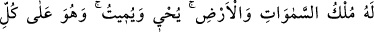
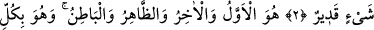
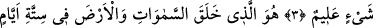
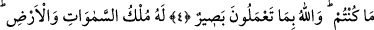
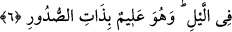

O SİZİNLE BERABERDİR
Bismillâhirrahmânirrahîm
1. Göklerde ve yerde bulunan her şey Allah’ı tesbih etmektedir. O, azîzdir,
hakîmdir.
2. Göklerin ve yerin mülkü O’nundur. O, diriltir, öldürür. O, her şeye gücü
yetendir.
3. O ilktir, sondur, zâhirdir, bâtındır. O, her şeyi bilendir.
4. O, gökleri ve yeri altı günde yaratan, sonra Arş’ın üzerine istivâ edendir. Yere
gireni ve ondan çıkanı, gökten ineni ve oraya yükseleni bilir. Nerede olsanız, O
sizinle beraberdir. Allah yaptıklarınızı görür.
5. Göklerin ve yerin mülkü O’nundur. Bütün işler ancak O’na döndürülür.
6. Geceyi gündüze katar, gündüzü de geceye katar. O, kalplerde olanı bilir.
“Göklerde ve yerde bulunan her şey Allah’ı tesbih etmektedir.” Tesbih, Allah’ı
O’nun yüceliğine lâyık olmayan ve yakışmayan şeylerden inanç, amel ve sözle tenzih
etmek, berî tutmaktır. Allah İsra sûresinde sübhane buyurarak fiilin masdarıyla
başlamıştır, çünkü masdar fiiller için asıl ve köktür. Daha sonra Hadîd, Haşr ve Saff
sûrelerine ise sebbeha diyerek aynı kelimenin mâzî fiiliyle başlamıştır, çünkü o iki
zamandan geçmişle alâkalı olanıdır. Cuma ve Teğabün sûrelerine aynı kelimenin muzârî
fiiliyle, el-A’la sûresine ise emir fiiliyle başladı. Bu durum, bu kelimenin mânâsının
bütün yönlerini kuşatması sebebiyle böyle olmuştur. Burada Allah Teâlâ’nın kullarına
bütün zaman ve vakitlerde tesbîhe devam etmeleri gerektiğini öğretmesi